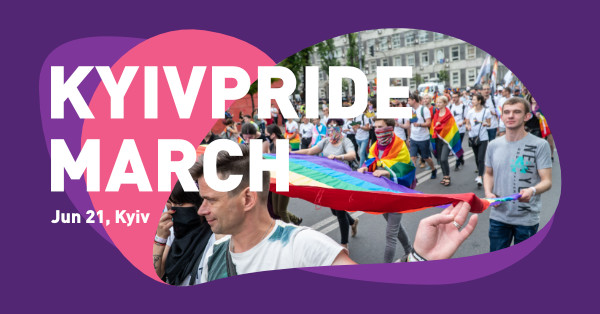
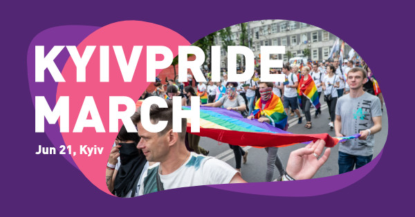

KyivPride is the biggest LGBT+ pride in Ukraine. The participants aim to protect human rights, and the ability of LGBT+ community to use them.
Details
As for 2020, the LGBT+ movement in Ukraine still faces a lot of aggression from far-right radicals, nationalists and neo-fascists. So the agenda is more about safety and visibility than celebration and pride.
The brand should engage with people; inspire them to protect their rights, to gather up around the ideas of diversity and equality. It is important to give honors to different movements participating in KyivPride: left activists, anarchists, eco-activists, LGBT+ in military, Romani diaspora, activists for inclusion, urbanists, feminists, etc.
Through many years KyivPride became a political force, not just a grassroots movement. It is also a well-established NGO with quite a liberal approach. So, the identity is not that edgy, but still queer.


 
